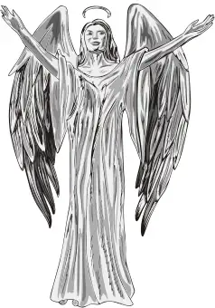

Writing Wednesdays: Goodbye Vampires, Hello Angels
{kind=link}

{kind=link}
Some of her longtime fans wonder, what’s up with Anne Rice? What’s gotten into her? But those who have experienced a similar wooing by the light simply say, “Welcome back, dear sister in Christ!”
For me, there are few things as inspiring as discovering that a fellow Christian who had fallen prey to the world and its promises has found her way back into the fold. Though some of her readers remain suspect, I am with those ready to offer a hearty embrace to Anne Rice: “Welcome home!”
Now, I have a confession to make here: I have not read any of Rice’s books, though I first learned of her work years ago. Even so, as a fellow writer, mother and Christian, I can’t help but feel excited to know of Rice’s “reversion.” I look forward to reading her memoir, Called Out of Darkness: A Spiritual Confession, as well as her newest novel, Angel Time.
I stumbled upon Rice’s reversion story through the blog of my writer-mama pal, Mary DeTurris Poust. In the article she wrote for Our Sunday Visitor based on an interview with Rice, Mary uncovered some inspiring thoughts of the well-known author’s related to how even her earlier work surrounding vampires comprised elements of her faith journey:
Rice said, “As I was writing Interview with the Vampire, I knew that I identified with Louis the vampire and that I felt like a creature of the night and a creature who was separated from God and a creature who was lost and pretty miserable. The book is really a meditation on misery, on the misery of being separated from God. I felt very comfortable writing it because it allowed me to express my sorrow. It’s only years later that I realized the book is about the loss of my Catholic faith. It’s about a fall from grace, about leaving the Church, about roaming in the darkness of atheism for many years and feeling as obsessed with God as ever.” [My emphasis…]
Those words struck me in a particular way. Feeling as obsessed with God as ever. In this way, Rice is no different than any of us. We are all, in a sense, obsessed with God, whether or not we want to name it that. We are obsessed with Love, after all – finding it and somehow retaining it, as well as finding ways to give it away. That is all any of us wants – to love and be loved. This is at the root of all our desires — money, success and wholeness. It’s really all about Love, and wanting more of it. God alone can offer this to us in any kind of fulfilling way. Anything else we experience in this life is only a glimpse of what is to come. Think of the most wonderful moment you have ever experienced. And consider that that moment of exhilaration was simply a point at which you made a direct connection with your Creator. And no matter how lovely, it was still just a glimmer, but it is, in fact, that glimmer to which we are all drawn – even if, on occasion, in a misguided way.
All of this got me thinking about salvation, and how we writers are working out our salvation in a particular way through our work. Even though Rice didn’t know that’s what she was doing earlier on, inevitably, she was able to see that even through writing about darker themes, she was gradually finding her way back to her God, Light of all Lights!
This is a profound thought to me, and one worthy of consideration as we move through our lives, whether in our writing or in relating to those around us day to day. I thank Rice (and Mary) for pointing out this awesome thought to me.
In what ways does your writing reflect your daily movement toward God – the One who has given you the desire to write in the first place? How are you responding to this gift of writing, especially as it relates to your salvation?